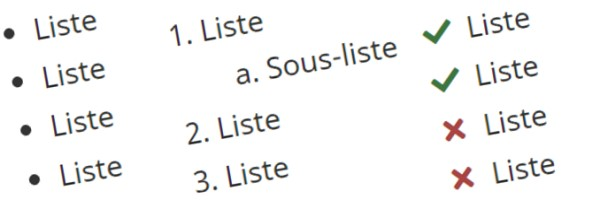

Tableaux – Système de conception GCWeb
Les tableaux sont un modèle de conception permettant d'afficher des données dans des lignes et des colonnes. Ils fournissent un moyen structuré de communiquer des informations.
Les tableaux permettent aux gens de balayer, de comprendre, d'analyser, de comparer et d'agir en fonction de l'information qu'ils contiennent.
Sur cette page
- Prendre en compte les besoins des utilisateurs
- Objectif des tableaux
- Quand les utiliser
- Quand envisager des solutions de rechange
- Comment les utiliser
- Fournir des légendes pour les tableaux
- Rédiger des en-têtes de tableau clairs et concis
- Utiliser la structure de tableau la plus simple possible
- Aligner les données dans les colonnes
- Placer les colonnes et les lignes par ordre d’importance pour l'utilisateur
- Trier les lignes par importance pour l'utilisateur
- Fournir des filtres afin que les utilisateurs puissent rechercher et réorganiser les données du tableau
- Ajouter des commandes de pagination pour les gros tableaux
- Coder des tableaux réactifs en fonction de la taille de l'écran
- Envisager d'utiliser des rangées avec couleurs alternées ou rangées rayées (zébrures)
- Éviter les cellules vides dans les tableaux
- Étude de cas sur l'amélioration et la simplification d'un tableau
- Satisfaire aux exigences en matière d'accessibilité
- Composantes et fonctionnalités complémentaires
Prendre en compte les besoins des utilisateurs
Les tableaux peuvent être un choix utile pour afficher des informations. Cependant, vous devez être prudent dans la rédaction du contenu et la conception de la mise en page des tableaux afin que les informations soient faciles à comprendre, accessibles et faciles à utiliser pour tous les utilisateurs.
L'utilisation de ce modèle en plus des lignes directrices du GCAU permet :
- aux utilisateurs ayant de petits écrans de voir tout le contenu d'un tableau en même temps
- aux utilisateurs qui accèdent au contenu à l’aide de la technologie d’assistance (lecteurs d'écran) de naviguer facilement et efficacement
- d’afficher des données qui sont trop détaillées ou précises pour être décrites dans du texte
- un balayage rapide qui fournit aux utilisateurs les informations dont ils ont besoin
Utilisez un tableau seulement s'il n'existe pas de moyen plus simple de présenter votre contenu, tel qu'une liste ou du texte. Passez en revue votre contenu, cette page de lignes directrices et la liste des modèles disponibles dans le GCAU pour déterminer si un tableau est le meilleur choix de conception pour présenter les informations.
Objectif des tableaux
Les tableaux permettent d’organiser et de présenter des données, telles que des renseignements financiers, des statistiques, et des renseignements comparatifs ou numériques.
Voici les tâches des utilisateurs que l’on retrouve le plus fréquemment dans les tableaux :
- Analyser et trouver des éléments qui répondent à des critères spécifiques
- Afficher un seul élément ou une seule ligne de données
- Comprendre et comparer les données
- Prendre des mesures ou prendre une décision basées sur les données
Quand les utiliser
- Pour organiser des informations connexes (par exemple, les numéros de téléphone pour l’impôt des particuliers, les prestations et les fiducies)
- Pour rendre les renseignements complexes plus faciles à comprendre en les présentant dans une structure claire (par exemple, dates des périodes de demande et dates limites)
- Pour permettre aux utilisateurs de consulter des informations précises (par exemple, l'emplacement des boîtes de dépôt et des bureaux de l'Agence ou les conseils aux voyageurs et avertissements)
- Pour mettre en évidence des tendances dans les données, bien qu'un graphique puisse être préférable à un tableau pour mettre en évidence ces tendances dans les données (par exemple, consultez les graphiques et les tableaux dans le Tableau de bord des performances de convivialité)
- Pour organiser les données trop détaillées ou précises pour être décrites correctement dans du texte (par exemple, les titulaires d'un compte d'épargne libre d'impôt (CELI) par groupe d'âge)
Quand envisager des solutions de rechange
- Lorsque vous forcez la mise en page du texte, envisagez d'utiliser des zones flexibles, des grilles ou le nombre de colonnes pour les listes
- Lorsque l'information peut être présentée dans une liste ou résumée simplement dans le texte
Exemple d'utilisation d'une liste au lieu d'un tableau
Avant : Tableau complexe
Le tableau suivant est complexe et mal conçu. Il serait difficile d'y accéder et d'en comprendre l'information à l'aide d'un lecteur d'écran ou d'un appareil mobile.
| Association de l'Est | Association de l'Ouest | ||||||||||
|---|---|---|---|---|---|---|---|---|---|---|---|
| Équipe | Parties gagnées | Équipe | Parties gagnées | Équipe | Parties gagnées | Équipe | Parties gagnées | Équipe | Parties gagnées | ||
| Canadiens de Montréal | 22 | Maple Leafs de Toronto | 11 | Sénateurs d'Ottawa | 1 | Oilers d'Edmonton | 5 | Flames de Calgary | 1 | ||
Après : Listes à puces (au lieu d'un tableau complexe)
Ce tableau complexe peut plutôt être présenté sous la forme de 2 listes à puces. Il est plus facile pour une personne utilisant un lecteur d'écran ou un appareil mobile d'accéder aux informations et de les comprendre.
Équipes canadiennes de la Ligue nationale de hockey gagnantes de la Coupe Stanley (1927-2013)
Association de l'Est :
- Les Canadiens de Montréal ont remporté 22 victoires.
- Les Maple Leafs de Toronto ont remporté 11 victoires.
- Les Sénateurs d'Ottawa ont remporté 1 victoire.
Association de l'Ouest :
- Les Oilers d'Edmonton ont remporté 5 victoires.
- Les Flames de Calgary ont remporté 1 victoire.
Exemple de présentation de l'information sous forme de texte plutôt que dans un tableau
Avant : Tableau complexe
Le tableau suivant est complexe et mal conçu. Il serait difficile d'y accéder et d'en comprendre l'information à l'aide d'un lecteur d'écran ou d'un appareil mobile.
| Association de l'Est | Association de l'Ouest | ||||||||||
|---|---|---|---|---|---|---|---|---|---|---|---|
| Équipe | Parties gagnées | Équipe | Parties gagnées | Équipe | Parties gagnées | Équipe | Parties gagnées | Équipe | Parties gagnées | ||
| Canadiens de Montréal | 22 | Maple Leafs de Toronto | 11 | Sénateurs d'Ottawa | 1 | Oilers d'Edmonton | 5 | Flames de Calgary | 1 | ||
Après : Texte (au lieu d'un tableau complexe)
Si les utilisateurs n'ont pas besoin d'informations d'un niveau de détail ou de précision aussi élevé, présentez-les sous forme de texte. Dans ce cas, les utilisateurs n'ont probablement besoin que de savoir quelle équipe canadienne a remporté le plus de coupes Stanley au cours d'une certaine période.
Meilleure équipe canadienne de la Ligue nationale de hockey gagnante de la Coupe Stanley
De 1927 à 2013, les Canadiens de Montréal ont remporté 22 coupes Stanley, soit le plus grand nombre remporté par une équipe canadienne.
Comment les utiliser
Fournir des légendes pour les tableaux
Les légendes fournissent des informations qui peuvent aider les utilisateurs à trouver et comprendre les tableaux et à naviguer à l’intérieur de ceux-ci.
Si un en-tête et une légende sont fournis pour un tableau, conservez la légende et utilisez la classe
wb-inv afin qu'elle ne puisse être vue que par les lecteurs d'écran.
Légendes des tableaux
Une légende décrit l'objectif du tableau.
Les légendes aident les gens à :
- trouver un tableau
- comprendre le sujet du tableau
- décider s'ils veulent consulter le tableau
Une légende de tableau doit :
- donner une idée claire de ce qu'il y a dans le tableau
- être unique dans le contexte de la page
- être courte et ne pas comporter de mots inutiles
- commencer par les termes les plus pertinents
- avoir du sens par elle-même
- suivre les meilleures pratiques similaires à celles des titres et sous-titres
Une légende de tableau ne doit pas :
- donner une interprétation des données
- se terminer par de la ponctuation
- contenir des abréviations (sauf si le public connaît mieux l'abréviation que son équivalent au long)
- contenir des messages promotionnels (par exemple, des affirmations subjectives)
La plupart des lecteurs d'écran annoncent le contenu des légendes. Lorsque plusieurs tableaux se trouvent sur une page, les utilisateurs de lecteurs d'écran peuvent répertorier tous les tableaux avec leurs légendes. Une légende unique permet aux utilisateurs de lecteurs d'écran d'identifier plus facilement et d'accéder au tableau spécifique qui les intéresse.
Exemple de légende pour un tableau
Légende : Disponibilité d’un hébergement de vacances
Rédiger des en-têtes de tableau clairs et concis
Il existe 2 types d’en-têtes de tableau :
- En-tête de colonne
- En-tête de ligne
En-têtes de colonne et de ligne
- Attribuez à chaque colonne et chaque ligne un en-tête unique qui décrit les données de cette colonne ou ligne.
- Rédigez des en-têtes aussi courts que possible.
- Ajoutez des unités de mesure dans un en-tête de ligne ou de colonne, au lieu de les répéter dans chaque cellule de données.
Exemple : En-têtes de colonne avec unités de mesure
| Ville | Température minimale (°C) | Température maximale (°C) | Précipitations (mm) |
|---|---|---|---|
| Canberra | 10,7 | 24,4 | 52,6 |
| London | 3,8 | 10,3 | 48,0 |
| Nairobi | 13,1 | 25,6 | 92,8 |
| New Delhi | 15,4 | 29,7 | 14,7 |
| Tokyo | 5,6 | 13,3 | 117,5 |
En regardant les en-têtes de colonne « Ville », « Température minimale (°C) » et « Température maximale (°C) » et « Précipitations (mm) », les gens peuvent comprendre que la ville de Nairobi a une température minimale de 13,1 °C, une température maximale de 25,6 °C et des précipitations de 92,8 mm.
Les utilisateurs de lecteurs d'écran peuvent faire lire les en-têtes de ligne et de colonne à haute voix lorsqu'ils naviguent dans le tableau. Les lecteurs d'écran lisent les cellules une à la fois et font référence aux en-tête associés à chaque cellule, afin que le lecteur ne perde pas le contexte.
Utiliser la structure de tableau la plus simple possible
Il peut être difficile de rendre les tableaux complexes accessibles et faciles à lire pour les personnes utilisant des lecteurs d'écran ou des appareils mobiles.
Pour rendre les tableaux utiles pour le plus vaste public possible, prenez les mesures suivantes :
- Veillez à ce que les données du tableau soient courtes, claires et concises.
- Ajoutez uniquement les données pertinentes à ce que vous communiquez (pour réduire la taille du tableau).
- Transformez le tableau complexe en un ou plusieurs tableaux simples.
- Évitez les cellules fusionnées (elles peuvent être difficiles à comprendre pour les gens et poser des problèmes d'accessibilité).
- Évitez les tableaux imbriqués dans d'autres tableaux (ils peuvent être difficiles à comprendre pour les gens et poser des problèmes d'accessibilité).
- N'utilisez une image d'un tableau que lorsqu'une version HTML n'est pas viable, mais qu’il doit y avoir une version en texte intégral pour les personnes utilisant des appareils mobiles ou des technologies d'assistance.
- Si un tableau contient des notes de bas de page, placez-les à l’endroit où l’utilisateur en a besoin, habituellement juste après le tableau.
- Si plusieurs tableaux sur la même page comportent des notes de bas de page, chaque note de bas de page doit avoir une étiquette unique.
Exemple : Transformation d’un tableau complexe en un ou plusieurs tableaux simples
Avant : Un seul tableau complexe
Le tableau suivant est complexe et mal conçu. Il serait difficile d'y accéder et d'en comprendre l'information à l'aide d'un lecteur d'écran ou d'un appareil mobile.
| Association de l'Est | Association de l'Ouest | ||||||||||
|---|---|---|---|---|---|---|---|---|---|---|---|
| Équipe | Parties gagnées | Équipe | Parties gagnées | Équipe | Parties gagnées | Équipe | Parties gagnées | Équipe | Parties gagnées | ||
| Canadiens de Montréal | 22 | Maple Leafs de Toronto | 11 | Sénateurs d'Ottawa | 1 | Oilers d'Edmonton | 5 | Flames de Calgary | 1 | ||
Après : Un seul tableau simple
Le tableau complexe se transforme facilement en un tableau simple.
| Équipe | Parties gagnées | Association |
|---|---|---|
| Canadiens de Montréal | 22 | Est |
| Maple Leafs de Toronto | 11 | Est |
| Oilers d'Edmonton | 5 | Ouest |
| Flames de Calgary | 1 | Ouest |
| Sénateurs d'Ottawa | 1 | Est |
Après : 2 tableaux simples
S'il est important de souligner les championnats de la Coupe Stanley par association (région) de la LNH :
- Présentez l'information à l'aide de 2 tableaux plus simples.
- Utilisez les en-têtes de tableaux pour préciser quelle association les équipes représentent.
| Équipe | Parties gagnées |
|---|---|
| Canadiens de Montréal | 22 |
| Maple Leafs de Toronto | 11 |
| Sénateurs d'Ottawa | 1 |
| Équipe | Parties gagnées |
|---|---|
| Oilers d'Edmonton | 5 |
| Flames de Calgary | 1 |
Aligner les données dans les colonnes
Par défaut, la plupart des données de colonne sont alignées à gauche (dans les langues de gauche à droite comme l'anglais et le français). Cela permet de rendre les données facilement balayables, lisibles et comparables.
Il existe une exception à cette règle pour les données numériques liées à la taille. Ces nombres doivent être alignés à droite pour aider les utilisateurs à identifier la taille des nombres.
Règles d'alignement des données
- Alignement à gauche
-
- Données textuelles (par exemple : noms, descriptions)
- Données numériques non liées à la taille (par exemple : dates, heure, numéros de téléphone, numéros d'identification)
- Alignement à droite
-
- Données numériques liées à la taille (par exemple : pourcentages, dollars)
- Alignement au centre
-
- Évitez cet alignement autant que possible et utilisez-le seulement pour les données très courtes (par exemple : valeurs oui ou non)
Règles d'alignement des en-têtes de colonne
Alignez les en-têtes de colonne en fonction de leurs données de colonne (par exemple : si les données de colonne sont alignées à gauche, l'en-tête de colonne doit être aligné à gauche).
Placer les colonnes et les lignes par ordre d’importance pour l'utilisateur
L'ordre des colonnes d'un tableau doit refléter l'importance des données pour l'utilisateur. Placez les données avec les informations les plus importantes en commençant par la colonne de gauche.
Les colonnes connexes doivent être adjacentes. Par exemple, les détails de l'emplacement tels que l'adresse, la ville et le pays doivent être ensemble. Les séparer créerait plus de travail pour les utilisateurs lorsqu'ils font défiler ou balaient le tableau pour comparer les colonnes.
Trier les lignes par importance pour l'utilisateur
L'ordre de tri des lignes par défaut doit être défini par la première colonne de données et dans l'ordre qui convient le mieux à l'utilisateur et au contexte des données.
Options d'ordre de tri pour les lignes :
- Alphabétique (pour les noms de villes)
- Chronologique (pour les dates)
- Numérique (pour les périodes de demande)
- Ascendant (de A à Z, date la plus ancienne en premier, le plus petit chiffre en premier)
- Décroissant (Z à A, date la plus récente en premier, le plus grand chiffre en premier)
Vous pouvez autoriser les utilisateurs à réorganiser les données du tableau en fonction de leurs besoins : Fournir des filtres afin que les utilisateurs puissent rechercher et réorganiser les données du tableau.
Fournir des filtres afin que les utilisateurs puissent rechercher et réorganiser les données du tableau
Les filtres peuvent être utiles pour les utilisateurs lorsque les tableaux sont volumineux ou que les personnes recherchent des données ou des tendances spécifiques dans les données.
Les filtres permettent aux utilisateurs :
- de trouver les données spécifiques qui sont pertinentes pour leur tâche
- de sélectionner un sous-ensemble de données en fonction de leurs besoins
- de trier les données dans un ordre correspondant à leurs besoins
- d’afficher les tendances dans différents aspects des données
- de rendre les grands tableaux de données utilisables sur les appareils mobiles
Exemple : Tableau avec filtres pour la recherche et la réorganisation des données
| Maladies et affections | Sous-catégories |
|---|---|
| Moustiques et maladies transmises par les moustiques | Zoonotique (moustiques) |
| Neurinome de l'acoustique | Maladies de l'oreille |
| Trouble de l'adaptation | Maladies mentales |
| Troubles liés à l'utilisation à l'alcool | Maladies mentales |
| Sclérose latérale amyotrophique (SLA) | Troubles musculosquelettiques |
| Spondylarthrite ankylosante | Troubles musculosquelettiques |
| Oignons (hallax valgus) | Troubles musculosquelettiques (pieds) |
| Bruxisme | Troubles musculosquelettiques |
| Pied plat | Troubles musculosquelettiques |
| Reflux gastro-oesophagien pathologique (Oesophagite) | Maladies digestives |
| Glaucome | Maladies de l'oeil |
| Lésions intra-articulaires du genou | Troubles musculosquelettiques |
| Inégalité de longueur des membres inférieurs (ILMI) | Troubles musculosquelettiques |
| Otospongiose | Maladies de l'oreille |
| Maladie osseuse de Paget (Ostéite déformante hypertrophique) | Troubles musculosquelettiques |
| Pancréatite chronique | Maladies digestives |
| Ulcéreuse gastroduodénale | Autre |
| Kyste pilonidal | Autre |
| Syndrome chronique des plicae | Troubles musculosquelettiques |
| Psoriasis | Infections de la peau |
| Syndrome de la coiffe des rotateurs | Troubles musculosquelettiques |
| Talalgie du coureur (Fasciite plantaire) | Troubles musculosquelettiques |
| Spondylolisthésis et spondylolyse | Troubles musculosquelettiques |
| Troubles liés à l'utilisation de substances | Maladies mentales |
| Tendinose ou tendinite du joueur de tennis et du golfeur (épicondylite) | Troubles musculosquelettiques |
| Perte auditive | Maladies de l'oreille |
| Varices et thrombophlébite superficielle | Maladies du coeur et de la circulation sanguine |
| Vertige | Maladies de l'oreille |
| Incapacités liées à l'apprentissage (dyslexie, dysgraphie) | Troubles d'apprentissage et du développement |
| Fièvre hémorragique virale | Fièvres hémorragiques |
| Incapacités visuelles | Maladies de l'oeil |
| Tiques et maladies transmises par les tiques | Zoonotique (tiques) |
| Méningite fongique | Infection fongique affectant le cerveau et la moelle épinière |
| Maladies respiratoires infectieuses (comme la grippe, la COVID-19, le VRS) | Virus respiratoires |
| Virus respiratoire syncytial (VRS) | Maladies respiratoires |
| Mpox (variole simienne) | Zoonotique (animaux), infections transmissibles sexuellement (ITS) (évitable par la vaccination) |
| Accidents vasculaires cérébraux | Maladies du coeur et de la circulation sanguine |
| Maladie des gencives (gingivite, maladies parodontales) | Maladies buccodentaires |
| Allergies (atmosphériques) | Allergies et intolérances (respiratoire) |
| Allergies (dermatite) | Allergies et intolérances (peau) |
| Allergies (latex) | Allergies et intolérances (peau, respiratoire) |
| Allergies et intolérances (alimentaires) | Allergies et intolérances (alimentaires, digestives) |
| Amiantose | Maladies respiratoires |
| Angine de poitrine | Maladies du coeur et de la circulation sanguine |
| Anthrax | Zoonotique (animaux de ferme) |
| Apnée du sommeil | Maladies respiratoires |
| Arthrite (rhumatoïde, lupus érythémateux systémique, goutte, juvénile ou idiopathique) | Troubles musculosquelettiques (articulations) |
| Asthme | Maladies respiratoires |
| Atteintes inflammatoires pelviennes | Infections urogénitales |
| Bérylliose (béryllium) | Maladies respiratoires |
| Blastomycose | Maladies respiratoires |
| Botulisme | Maladies d'origine alimentaire et hydrique (intoxication alimentaire) |
| Brucellose (fièvre ondulante) | Maladies d'origine alimentaire et hydrique (intoxication alimentaire) |
| Brûlure due au vent | Blessures liées aux conditions climatiques |
| Bursite | Troubles musculosquelettiques |
| C. difficile (Clostridium difficile) | Maladies gastro-intestinales et enthériques |
| Campylobactériose (campylobactéries) | Maladies d'origine alimentaire et hydrique (intoxication alimentaire) |
| Cancer | Cancers |
| Cancer colorectal | Cancers |
| Cancer de la bouche | Maladies buccodentaires |
| Cancer de la glande thyroïde | Cancers |
| Cancer de la peau (mélanome & non mélanome) | Cancers |
| Cancer de la prostate | Cancers |
| Cancer des os (ostéosarcome, chondrosarcome, sarcome d'Ewing) | Cancers |
| Cancer du col de l'utérus | Cancers |
| Cancer du poumon | Cancers (respiratoire) |
| Cancer du sein | Cancers |
| Caries | Maladies buccodentaires |
| Cataractes | Maladies de l'oeil |
| Chikungunya | Zoonotique (moustiques) |
| Chlamydiose | Infections transmissibles sexuellement (ITS) |
| Choléra | Maladies d'origine alimentaire et hydrique (intoxication alimentaire)(évitable par la vaccination ) |
| Cholestérol élevé | Maladies du coeur et de la circulation sanguine |
| Ciguatera | Maladies d'origine alimentaire et hydrique (intoxication alimentaire) |
| Clostridium perfringens | Maladies d'origine alimentaire et hydrique (intoxication alimentaire) |
| Commotion cérébrale | Lésions cérébrales |
| Contracture de Dupuytren | Troubles musculosquelettiques (mains) |
| Coqueluche (toux coquelucheuse) | Maladies respiratoires (évitable par la vaccination) |
| Infection à coronavirus | Maladies respiratoires |
| Coup de soleil | Blessures liées aux conditions climatiques |
| Crise cardiaque | Maladies du coeur et de la circulation sanguine |
| Cronobacter (Enterobacter sakazakii) | Maladies d'origine alimentaire et hydrique (intoxication alimentaire) |
| Cryptococcocus | Zoonotique (animaux) |
| Cryptosporidiose (infection à Cryptosporidium) | Maladies d'origine alimentaire et hydrique (intoxication alimentaire) |
| Cyclospora | Maladies d'origine alimentaire et hydrique (intoxication alimentaire) |
| Cytomegalovirus | Autre |
| Démence | Maladies neurologiques, mentales |
| Dépression | Maladies mentales |
| Dermatite (contact irritant, eczéma) | Infections de la peau |
| Dengue | Fièvres hémorragiques, zoonotique (moustiques) |
| Diabète | Maladies métaboliques |
| Diarrhée du voyageur | Maladies d'origine alimentaire et hydrique (intoxication alimentaire) |
| Diphtérie | Maladies respiratoires (évitable par la vaccination) |
| Échovirus | Autre |
| Encéphalite à tiques | Zoonotique (tiques)(évitable par la vaccination ) |
| Encéphalite japonaise | Zoonotique (moustiques)(évitable par la vaccination ) |
| Entérovirus non poliomyélitique (virus Coxsackie et D-68) | Autre |
| Épilepsie | Maladies neurologiques |
| État de stress post-traumatique (ÉSPT) | Maladies mentales |
| Fatigue | Autre |
| Fibrillation auriculaire | Maladies du coeur et de la circulation sanguine |
| Fièvre de Lassa | Fièvres hémorragiques |
| Fièvre de la vallée (coccidioïdomycose) | Autre |
| Fièvre de la vallée du Rif | Zoonotique (moustiques) |
| Fièvre jaune | Zoonotique (moustiques)(évitable par la vaccination ) |
| Fièvre pourprée des montagnes Rocheuses | Zoonotique (tiques) |
| Fièvre Q | Zoonotique (animaux) |
| Fièvre typhoïde (Salmonella typhi) | Maladies d'origine alimentaire et hydrique (évitable par la vaccination ) |
| Ganglion synovial | Troubles musculosquelettiques |
| Gelures | Blessures liées aux conditions climatiques |
| Gonorrhée | Infections transmissibles sexuellement (ITS) |
| Grippe humaine A(H1N2)v avec origine porcine | Maladies respiratoires |
| Grippe (influenza) | Maladies respiratoires (évitable par la vaccination ) |
| Grippe aviaire (H5N1) (influenza) | Maladies respiratoires, zoonotique (oiseaux) |
| Grippe aviaire A(H7N9) (influenza) | Maladies respiratoires, zoonotique (oiseaux) |
| Grippe pandémique | Maladies respiratoires |
| Haemophilus influenzae (type b et non-b) | Maladies respiratoires (évitable par la vaccination) |
| Hantavirus | Zoonotique (animaux) |
| Hépatite | Maladies du foie |
| Hépatite A | Maladies d'origine alimentaire et hydrique (intoxication alimentaire)(foie) (évitable par la vaccination) |
| Hépatite B | Maladies du foie, Infections transmissibles sexuellement (ITS) (évitable par la vaccination) |
| Hépatite C | Maladies du foie, Infections transmissibles sexuellement (ITS) |
| Hépatite D | Maladies du foie |
| Hépatite E | Maladies d'origine alimentaire et hydrique (intoxication alimentaire)(foie) |
| Hépatite G | Maladies du foie |
| Hépatite aiguë grave chez les enfants | Maladies du foie |
| Herpès génital | Infections transmissibles sexuellement (ITS) |
| Histoplasmose | Maladies respiratoires |
| Hypertension - voir Tension artérielle élevée | Maladies du coeur et de la circulation sanguine |
| Hypothermie | Blessures liées aux conditions climatiques |
| Maladie à coronavirus (COVID-19) | Maladies respiratoires |
| Infection à E. coli (Escherichia coli) | Maladies d'origine alimentaire et hydrique (intoxication alimentaire) |
| Infection à Giardia (giardiase) | Maladies d'origine alimentaire et hydrique (intoxication alimentaire) |
| Intoxication par les mollusques (phycotoxine paralysante, amnestique et diarrhétique) | Maladies d'origine alimentaire et hydrique (intoxication alimentaire) |
| Leishmaniose | Zoonotique (phlébotomes) |
| Lèpre | Infections de la peau |
| Leptospirose | Zoonotique (animaux) |
| Listériose (Infection à listérias) | Maladies d'origine alimentaire et hydrique (intoxication alimentaire) |
| Lymphogranulome vénérien (LGV) | Infections transmissibles sexuellement (ITS) |
| Maculopathie (dégénérescence maculaire) | Maladies de l'oeil |
| Maladies à streptocoque du groupe A | Infections bactériennes |
| Maladie à virus de Marburg | Fièvres hémorragiques, zoonotique (animaux) |
| Maladie à virus Ebola | Fièvres hémorragiques |
| Maladie cardiovasculaire | Maladies du coeur et de la circulation sanguine |
| Maladies chroniques et affections | Autre |
| Maladie coeliaque (intolérance au gluten) | Allergies et intolérances (alimentaires, digestives) |
| Maladie de Chagas (Trypanosomiase américaine) | Zoonotique (insectes triatomes) |
| Maladie de Creutzfeldt-Jakob (variant de la MCJ, maladies à prion) | Maladies neurologiques |
| Maladie de De Quervain | Troubles musculosquelettiques (mains) |
| Maladie de Powassan | Zoonotique (tiques) |
| Maladie de Lyme | Zoonotique (tiques) |
| Anaplasmose | Zoonotique (tiques) |
| Maladie du légionnaire et fièvre de Pontiac (légionellose) | Maladies respiratoires |
| Maladie inflammatoire de l'intestin | Maladies digestives |
| Maladie pulmonaire obstructive chronique (MPOC) | Maladies respiratoires |
| Maladies à prion | Maladies à prion |
| Maladies d'origine alimentaire (intoxication) | Maladies d'origine alimentaire et hydrique (intoxication alimentaire) |
| Maladies du coeur | Maladies du coeur et de la circulation sanguine |
| Maladies mentales | Maladies mentales |
| Maladies neurologiques (paralysie, épilepsie) | Maladies neurologiques |
| Maladie pulmonaire grave liée au vapotage | Maladies respiratoires |
| Maladies respiratoires aiguës (Adénovirus) | Maladies respiratoires |
| Maladies respiratoires émergentes | Maladies respiratoires |
| Infection invasive à méningocoque (méningite) | (évitable par la vaccination) |
| Mycobactéries non tuberculeuses | Autre |
| Myélite flasque aiguë | Maladies neurologiques |
| Norovirus (gastro-entérite, grippe intestinale) | Maladies gastro-intestinales et enthériques |
| Obésité | Maladies métaboliques |
| Oreillons | (évitable par la vaccination) |
| Ostéoporose | Troubles musculosquelettiques (os) |
| Paludisme | Zoonotique (moustiques) |
| Paralysie flasque aiguë | Autre |
| Parkinsonisme, maladie de Parkinson | Maladies neurologiques |
| Poux du pubis (morpions) et la gale | Infections transmissibles sexuellement (ITS) |
| Perte d'audition | Maladies de l'oreille |
| Peste | Zoonotique (animaux)(évitable par la vaccination ) |
| Phénomène de Raynaud | Maladies du coeur et de la circulation sanguine |
| Pied d'athlète (tinea pedis) | Infections de la peau |
| Pneumococcies invasives | Maladies respiratoires (évitable par la vaccination ) |
| Polio (Poliomyélite) | Maladies d'origine alimentaire et hydrique (évitable par la vaccination ) |
| Poumon de fermier (pneumonite d'hypersensibilité) | Allergies et intolérances (respiratoire) |
| Psittacose | Zoonotique (oiseaux) |
| Rage | Zoonotique (animaux)(évitable par la vaccination) |
| Rectite | Infections transmissibles sexuellement (ITS) |
| Rétinopathie | Maladies de l'oeil |
| Rhinovirus (rhinitis, common cold) | Maladies respiratoires |
| Rotavirus (diarrhée infantile, gastro-entérite) | Maladies gastro-intestinales et enthériques (évitable par la vaccination ) |
| Rougeole | Maladies respiratoires (évitable par la vaccination ) |
| Rubéole | Maladies respiratoires (évitable par la vaccination ) |
| Salmonellose (salmonelle) | Maladies d'origine alimentaire et hydrique (intoxication alimentaire) |
| Sarcoïdose | Maladies respiratoires |
| Scarlatine (fièvre) | Autre |
| Schizophrénie | Maladies mentales |
| Sclérose en plaques (SP, encephalomyelitis disseminata) | Maladies neurologiques |
| Scombroïdose | Maladies d'origine alimentaire et hydrique (intoxication alimentaire) |
| Shigellose (Shigella) | Maladies d'origine alimentaire et hydrique (intoxication alimentaire) |
| SRAS (syndrome respiratoire aigu sévère) | Maladies respiratoires |
| Staphylococcus aureus résistant à la méthicilline (SARM) d'origine communautaire | Infections de la peau |
| Staphylocoque (Staphylococcus aureus résistant à la méthicilline) | Infections de la peau |
| Syndrome de fibromyalgie | Maladies neurologiques |
| Syndrome du canal carpien (fourmillement et engourdissement des doigts) | Troubles musculosquelettiques (mains) |
| Syndrome hypothénarien du marteau | Troubles musculosquelettiques (mains) |
| Syndrome respiratoire du Moyen-Orient (SRMO) | Maladies respiratoires |
| Syphilis | Infections transmissibles sexuellement (ITS) |
| Teigne (dermatophytose) | Infections de la peau |
| Tétanos | (évitable par la vaccination) |
| Toxoplasmose | Zoonotique (chats) |
| Trichinose | Maladies d'origine alimentaire et hydrique |
| Trichomonase | Infections transmissibles sexuellement (ITS) |
| Trouble bipolaire (maniaco-dépression) | Maladies mentales |
| Trouble du spectre autistique | Troubles d'apprentissage et du développement |
| Trouble du spectre de l'alcoolisation fœtale (TSAF) | Autre |
| Troubles anxieux | Maladies mentales |
| Troubles de la personnalité | Maladies mentales |
| Troubles de l'alimentation (anorexie, boulimie) | Maladies mentales |
| Troubles musculo-squelettiques | Troubles musculosquelettiques |
| Troubles tendineux (tendinopathie, tendinite, ténosynovite) | Troubles musculosquelettiques (articulations) |
| Troubles valvulaires | Maladies du coeur et de la circulation sanguine |
| Trypanosomiase africaine (maladie du sommeil) | Zoonotique (mouche tsé-tsé) |
| Tuberculose (bacille tuberculeux) | Maladies respiratoires (évitable par la vaccination ) |
| Tularémie | Zoonotique (animaux) |
| Urétrite | Infections urogénitales (infections transmissibles sexuellement) (ITS) |
| Vaginite candidosique (candidose vulvo-vaginale) | Infections urogénitales |
| Vaginose bactérienne | Infections urogénitales |
| Varicelle (virus varicelle-zona) | Maladies respiratoires (évitable par la vaccination) |
| Variole (éradiée) | Maladies respiratoires (évitable par la vaccination) |
| Vers (infections de nématodes intestinaux) | Maladies d'origine alimentaire et hydrique |
| Vésiculovirus (virus de la stomatite vésiculeuse) | Zoonotique (phlébotome, animaux) |
| Vibrions (V. parahaemolyticus, V. vulnificus, V. alginolyticus) | Maladies d'origine alimentaire et hydrique (intoxication alimentaire) |
| VIH et sida (virus de l'immunodéficience humaine, syndrome d'immunodéficience acquise) | Infections transmissibles sexuellement (ITS) |
| Virus de la chorioméningite lymphocytaire (VCML) | Zoonotique (animaux) |
| Virus de la fièvre à tiques du Colorado | Zoonotique (tiques) |
| Virus de la vaccine (poxvirus) | Infections de la peau |
| Virus de l'encéphalite équine du Venezuela (arbovirus) | Zoonotique (moustiques) |
| Virus du Nil occidental | Zoonotique (moustiques) |
| Virus du papillome humain (VPH) | Infections transmissibles sexuellement (ITS) (évitable par la vaccination) |
| Virus Nipah | Maladies respiratoires, zoonotique (chauves souris frugivores) |
| Virus para-influenza | Maladies respiratoires |
| Virus spumeux simien (spumavirus, singe) | Zoonotique (animaux) |
| Virus Seoul | Zoonotique (animaux) |
| Virus Zika | Zoonotique (moustiques) |
| Zona (herpes-varicella zoster) | Infections de la peau (évitable par la vaccination) |
| Douleur chronique | Autre |
Ajouter des commandes de pagination pour les gros tableaux
Les commandes de pagination dans les tableaux permettent aux utilisateurs de choisir le nombre de lignes de tableau à afficher sur une page. Ils aident les gens à visualiser les gros tableaux et à naviguer à l’intérieur des tableaux sans que ce ne soit trop lourd.
S'il y a plus de 12 lignes dans un tableau, envisagez d'ajouter des commandes de pagination.
Le nombre de lignes affichées par défaut varie souvent entre 5 et 25 lignes. Choisissez le nombre de lignes par défaut en fonction de ce qui est logique dans le contexte du tableau et de la façon dont les utilisateurs utilisent les données :
- S'il y a du contenu sur la page après le tableau, envisagez un plus petit nombre de lignes par défaut afin qu'il soit facile pour les utilisateurs de voir le contenu qui apparaît après le tableau.
- Si les données de chaque ligne sont concises, envisagez un nombre plus élevé de lignes par défaut.
- Si les données de chaque ligne sont longues, envisagez un plus petit nombre de lignes par défaut.
Coder des tableaux réactifs en fonction de la taille de l'écran
Certains appareils peuvent avoir des écrans trop petits pour afficher toute la largeur du contenu du tableau.
Les tableaux réactifs peuvent :
- s'adapter aux différentes tailles d'écran tout en conservant l'ordre logique et la structure des données
- permettre d’éviter le défilement horizontal ou le zoom sur des écrans plus petits
Le codage des tableaux réactifs garantit que :
- les utilisateurs peuvent facilement lire et interagir avec les données du tableau quel que soit l'appareil qu'ils utilisent
- les personnes handicapées qui utilisent des appareils d’assistance peuvent naviguer et comprendre efficacement le contenu du tableau
Pour les écrans trop petits pour afficher toute la largeur du contenu, un tableau réactif peut être codé pour :
-
Afficher une barre de défilement horizontale
-
Diviser le tableau en tableaux distincts plus petits
Exemple : tableau réactif en fonction de la taille de l'écran
Grandeur d'écran :
Modifiez la taille d'affichage de votre écran pour visualiser les changements dans le tableau réactif ci-dessous.
| Ville | Population en 2007 | Population en 2017 | Variation en pourcentage |
|---|---|---|---|
| Toronto | 5 418 207 | 6 346 088 | 17,1 % |
| Montréal | 3 714 846 | 4 138 254 | 11,4 % |
| Vancouver | 2 218 134 | 2 571 262 | 15,9 % |
| Ottawa–Gatineau | 1 188 073 | 1 377 016 | 15,9 % |
Envisager d'utiliser des rangées avec couleurs alternées ou rangées rayées (zébrures)
L'utilisation de couleurs alternées ou de rangée rayées « zébrures » améliore la lisibilité, en particulier dans les tableaux longs et complexes. Les rayures aident les gens à distinguer les rangées les unes des autres.
Styliser les lignes paires et impaires d'une manière différente peut aider les personnes qui ont des difficultés de lecture ou qui ont besoin d’agrandir le texte.
Les rayures agissent comme un guide visuel afin que les gens :
- restent concentrés sur la ligne qu'ils analysent
- soient moins susceptibles de perdre l’endroit où ils sont ou d'interpréter les données de manière erronée
Gardez le contraste entre les deux couleurs subtil, mais respectez les règles de contraste minimum (1.4.3) des Règles pour l'accessibilité des contenus Web 2.1.
Évitez d’utiliser de la couleur ou de la texture. Si vous devez utiliser des textures et des couleurs dans un tableau, expliquez ce qu’elles signifient (par exemple, dans les notes du tableau ou dans une légende).
Éviter les cellules vides dans les tableaux
N'utilisez pas de cellules vides seulement pour des raisons de mise en forme. Envisagez plutôt de restructurer le tableau ou d'utiliser plusieurs tableaux.
Les technologies d'assistance comme un lecteur d'écran avertiront la personne si la cellule est vide.
Rendez votre tableau aussi clair que possible pour tous les publics :
- Si la valeur est zéro, indiquez « 0 » plutôt que de laisser la cellule vide.
- Si vous ne savez pas quelle est la valeur, indiquez « aucune donnée ».
- Si la cellule ne doit pas avoir de valeur parce que les titres ne sont pas pertinents, indiquez « sans objet » ou « s.o. ».
S'il est nécessaire qu'une cellule n'ait aucune valeur, expliquez pourquoi dans les notes, la légende ou le contenu qui accompagne votre tableau.
Étude de cas sur l'amélioration et la simplification d'un tableau
Ce que nous avons fait
Pour améliorer et simplifier les tableaux suivants, nous avons :
- divisé un tableau complexe en plusieurs tableaux simples qui sont plus accessibles et peuvent être consultés facilement sur les appareils mobiles
- fourni le tableau récapitulatif en premier, suivi des tableaux contenant des informations de plus en plus détaillées (ce qui signifie que nous avons appliqué l’approche de la pyramide inversée)
- choisi un titre clair pour chaque tableau
- utilisé des sous-titres existants précédemment incorporés dans les cellules du tableau pour créer des titres de tableau
- ajouté des zéros pour fournir des informations pertinentes dans les cellules vides
- supprimé les cellules et les lignes vides, ainsi que les informations et sous-titres non pertinents
Exemples avant et après de l'amélioration et de la simplification d'un tableau complexe
Exemple : Avant (tableau complexe)
| Soutenir les familles et les collectivités (en millions de dollars) | 2013 à 14 | 2014 à 15 | Total |
|---|---|---|---|
| Soutenir les familles | |||
| Élargir l'allègement fiscal à l'égard des services de soins à domicile | 5 | 5 | 10 |
| Soins palliatifs et soins de fin de vie | 1 | 1 | 2 |
| Allègements tarifaires pour les consommateurs canadiens | 76 | 76 | 152 |
| Total partiel : Soutenir les familles | 82 | 82 | 164 |
| Investir dans les collectivités | |||
| Logements pour les Canadiens dans le besoin | |||
| Stratégie des partenariats de lutte contre l'itinérance | 119 | 119 | |
| Investissement dans le logement abordable | 253 | 253 | |
| Investir dans le logement au Nunavut | 30 | 70 | 100 |
| Soutenir les anciens combattants et leur rendre hommage | |||
| Améliorer le Programme de funérailles et d'inhumation d'Anciens Combattants Canada | 63 | 2 | 65 |
| En route vers 2017 | 1 | 2 | 3 |
| Investir dans les arts et la culture | |||
| Revitalisation du Massey Hall | 8 | 8 | |
| Étendre les services de bibliothèque pour les Canadiens aveugles ou atteints d'une déficience visuelle | |||
| Super crédit pour premier don de bienfaisance | 3 | 3 | |
| Appuyer la transition économique des collectivités associées à l'industrie de l'amiante chrysotile | 25 | 25 | 50 |
| Logements pour les Canadiens dans le besoin | 3 | 5 | 8 |
| Total partiel : Investir dans les collectivités | 133 | 476 | 609 |
| Protéger l'environnement naturel du Canada | |||
| Conservation de la nature Canada | 20 | 20 | |
| Améliorer la conservation des aires de pêche grâce aux partenariats communautaires | 5 | 5 | 10 |
| Timbre de conservation du saumon | 1 | 1 | 2 |
| Favoriser la gestion responsable des ressources marines | 4 | 4 | |
| Lutter contre les espèces envahissantes | 2 | 2 | 3 |
| Accroître l'aide fiscale pour la production d'énergie propre | 1 | 1 | |
| Total partiel : Protéger l'environnement naturel du Canada | 32 | 9 | 41 |
| Créer des collectivités autochtones vigoureuses | |||
| Régler les revendications particulières | 27 | 27 | 54 |
| Régime de gestion des terres des Premières Nations | 2 | 7 | 9 |
| Programme des services de police des Premières Nations | 18 | 18 | 36 |
| Stratégie de la justice applicable aux Autochtones | 11 | 11 | |
| Renouveler le Programme pour la prévention de la violence familiale | 12 | 12 | 24 |
| Améliorer les services de santé dans les collectivités des Premières Nations | 24 | 24 | 48 |
| Améliorer les services en santé mentale dans les collectivités des Premières Nations | 2 | 2 | 4 |
| Total partiel : Créer des collectivités autochtones vigoureuses | 95 | 90 | 185 |
| Total : Soutenir les familles et les collectivités | 342 | 657 | 999 |
| Moins les fonds prévus dans le cadre financier actuel | (76) | (422) | (498) |
| Moins les fonds assurés au moyen de réaffectations internes | (1) | (11) | (12) |
| Coût budgétaire net | 265 | 224 | 489 |
|
Remarque : Les montants annuels ayant été arrondis, leur somme peut ne pas correspondre au total indiqué. |
|||
Exemple : Après (plusieurs tableaux simples)
| Répartition des coûts | 2013 à 2014 | 2014 à 2015 | Total |
|---|---|---|---|
| Total : Soutenir les familles et les collectivitésVoir la note 2 du tableau 1 | 342 | 657 | 999 |
| Moins les fonds prévus dans le cadre financier actuel | (76) | (422) | (498) |
| Moins les fonds assurés au moyen de réaffectations internes | (1) | (11) | (12) |
| Coûts budgétaires nets | 265 | 224 | 489 |
Notes du tableau 1
|
|||
| Initiatives et programmes | 2013 à 2014 | 2014 à 2015 | Total |
|---|---|---|---|
| Soutenir les famillesVoir la note 2 du tableau 2 | 82 | 82 | 164 |
| Investir dans les collectivitésVoir la note 3 du tableau 2 | 133 | 476 | 609 |
| Protéger l'environnement naturel du CanadaVoir la note 4 du tableau 2 | 32 | 9 | 41 |
| Créer des collectivités autochtones vigoureusesVoir la note 5 du tableau 2 | 95 | 90 | 185 |
| Total : Soutenir les familles et les collectivités | 342 | 657 | 999 |
Notes du tableau 1
|
|||
| Initiatives et programmes | 2013 à 2014 | 2014 à 2015 | Total |
|---|---|---|---|
| Allègement fiscal à l'égard des services de soins à domicile | 5 | 5 | 10 |
| Soins palliatifs et soins de fin de vie | 1 | 1 | 2 |
| Allègements tarifaires pour les consommateurs canadiens | 76 | 76 | 152 |
| Total partiel : Soutenir les familles | 82 | 82 | 164 |
Notes du tableau 3
|
|||
| Initiatives et programmes | 2013 à 2014 | 2014 à 2015 | Total |
|---|---|---|---|
| Logements pour les Canadiens dans le besoin | 0 | 0 | 0 |
| Stratégie des partenariats de lutte contre l'itinérance | 0 | 119 | 119 |
| Investissement dans le logement abordable | 0 | 253 | 253 |
| Investissement dans le logement au Nunavut | 30 | 70 | 100 |
| Soutient et hommage combattants et leur rendre hommage | 0 | 0 | 0 |
| Programme de funérailles et d'inhumation d'Anciens Combattants Canada | 63 | 2 | 65 |
| En route vers 2017 | 1 | 2 | 3 |
| Investissement dans les arts et la culture | 0 | 0 | 0 |
| Revitalisation du Massey Hall | 8 | 0 | 8 |
| Services de bibliothèque pour les Canadiens aveugles ou atteints d'une déficience visuelle | 3 | 0 | 3 |
| Super crédit pour premier don de bienfaisance | 25 | 25 | 50 |
| Appui de transition économique des collectivités associées à l'industrie de l'amiante chrysotile | 3 | 5 | 8 |
| Total partiel : Investir dans les collectivités | 133 | 476 | 609 |
Notes du tableau 4
|
|||
| Initiatives et programmes | 2013 à 2014 | 2014 à 2015 | Total |
|---|---|---|---|
| Conservation de la nature Canada | 20 | 0 | 20 |
| Conservation des aires de pêche grâce aux partenariats communautaires | 5 | 5 | 10 |
| Timbre de conservation du saumon | 1 | 1 | 2 |
| Gestion responsable des ressources marines | 4 | 0 | 4 |
| Lutte contre les espèces envahissantes | 2 | 2 | 3 |
| Aide fiscale pour la production d'énergie propre | 0 | 1 | 1 |
| Total partiel : Protéger l'environnement naturel du Canada | 32 | 9 | 41 |
Notes du tableau 5
|
|||
| Initiatives et programmes | 2013 à 2014 | 2014 à 2015 | Total |
|---|---|---|---|
| Résolution des revendications particulières | 27 | 27 | 54 |
| Régime de gestion des terres des Premières Nations | 2 | 7 | 9 |
| Programme des services de police des Premières Nations | 18 | 18 | 36 |
| Stratégie de la justice applicable aux Autochtones | 11 | 0 | 11 |
| Programme pour la prévention de la violence familiale | 12 | 12 | 24 |
| Services de santé dans les collectivités des Premières Nations | 24 | 24 | 48 |
| Services en santé mentale dans les collectivités des Premières Nations | 2 | 2 | 4 |
| Total partiel : Créer des collectivités autochtones vigoureuses | 95 | 90 | 185 |
Notes du tableau 6
|
|||
Satisfaire aux exigences en matière d'accessibilité
La Loi canadienne sur l'accessibilité (LCA) exige que le contenu créé pour l'Agence du revenu du Canada (ARC) atteigne l'objectif de faire du Canada un pays exempt d'obstacles d'ici 2040. Pour ses produits numériques, Normes d'accessibilité Canada suit la norme harmonisée européenne sur les technologies de l'information et des communications (TIC). L'ARC utilise les Règles pour l’accessibilité des contenus Web (WCAG) 2.1 pour respecter la LCA et doit se conformer aux niveaux A et AA des WCAG.
En suivant les directives du GCAU, votre contenu Web devrait répondre aux critères de réussite WCAG suivants :
- 1.3.1 Information et relations (Niveau A)
- 1.3.2 Ordre séquentiel logique (Niveau A)
- 1.4.4 Redimensionnement du texte (Niveau AA)
- 1.4.10 Redistribution (Niveau AA)
- 2.4.4 Fonction du lien (selon le contexte) (Niveau A)
- 2.4.6 En-têtes et étiquettes (Niveau AA)
Bien que cela ne soit pas obligatoire, pour améliorer encore plus l'accessibilité, plus d'informations sur la configuration et le codage de tableaux accessibles sont disponibles dans le tutoriel W3C Web Accessibility Initiative Tables (en anglais).
Composantes et fonctionnalités complémentaires
Des fonctionnalités et des comportements supplémentaires sont disponibles.
-

- Date de modification :